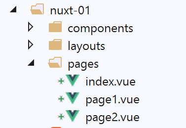
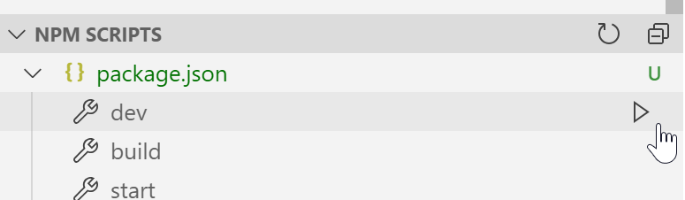

4. Esempio [nuxt-01]: instradamento e navigazione
Realizzeremo una serie di semplici esempi per scoprire gradualmente il funzionamento di un’applicazione [nuxt]. Inizieremo trasferendo l’applicazione [vuejs-11] dal documento |Introduzione al framework VUE.JS con un esempio|, per capire innanzitutto cosa differenzia l’organizzazione del codice di un’applicazione [nuxt] da quella di un’applicazione [vue].
4.1. Struttura ad albero del progetto
Il progetto [vuejs-11] era un progetto di navigazione tra le viste:

La struttura del codice sorgente del progetto [vuejs-11] era la seguente:

- [main.js] era lo script eseguito all’avvio dell’applicazione [vue];
- [router.js] definiva le regole di instradamento;
- [App.vue] era la vista strutturale dell’applicazione. Organizzava l’impaginazione delle diverse viste;
- [Component1, Component2, Component3, Layout, Navigation] erano i componenti utilizzati nelle diverse viste dell’applicazione;
Nel porting dell’applicazione [vue] [1] verso un’applicazione [nuxt] [2]:
- gli script eseguiti all’avvio dell’applicazione devono essere dichiarati nella chiave [plugins] del file [nuxt.config.js]. Inoltre, è possibile separare gli script destinati al server [nuxt] da quelli destinati al client [nuxt];
- la vista [App.vue] deve essere installata nella cartella [layouts] e rinominata [default.vue];
- i componenti [Component1, Component2, Component3], che sono le destinazioni del routing, devono essere spostati nella cartella [pages]. Uno di essi, quello che funge da pagina iniziale, deve essere rinominato [index.vue]. In questo caso abbiamo rinominato i file:
- [Component1] --> [index]: visualizza il testo [Home];
- [Component2] --> [page1]: visualizza il testo [Page 1];
- [Component3] --> [page2]: visualizza il testo [Page 2];
[nuxt] utilizza il contenuto della cartella [pages] per generare dinamicamente i seguenti percorsi:
Di conseguenza, il file [router.js] utilizzato nel progetto [vue] diventa superfluo nel progetto [nuxt].
Il file di configurazione [nuxt.config.js] sarà il seguente:
export default {
mode: 'universal',
/*
** Headers of the page
*/
head: {
title: 'Introduction à [nuxt.js]',
meta: [
{ charset: 'utf-8' },
{ name: 'viewport', content: 'width=device-width, initial-scale=1' },
{
hid: 'description',
name: 'description',
content: 'ssr routing loading asyncdata middleware plugins store'
}
],
link: [{ rel: 'icon', type: 'image/x-icon', href: '/favicon.ico' }]
},
/*
** Customize the progress-bar color
*/
loading: { color: '#fff' },
/*
** Global CSS
*/
css: [],
/*
** Plugins to load before mounting the App
*/
plugins: [],
/*
** Nuxt.js dev-modules
*/
buildModules: [
// Doc: https://github.com/nuxt-community/eslint-module
'@nuxtjs/eslint-module'
],
/*
** Nuxt.js modules
*/
modules: [
// Doc: https://bootstrap-vue.js.org
'bootstrap-vue/nuxt',
// Doc: https://axios.nuxtjs.org/usage
'@nuxtjs/axios'
],
/*
** Axios module configuration
** See https://axios.nuxtjs.org/options
*/
axios: {},
/*
** Build configuration
*/
build: {
/*
** You can extend webpack config here
*/
extend(config, ctx) {}
},
// directory del codice sorgente
srcDir: 'nuxt-01',
// router
router: {
// radice dell'applicazione URL
base: '/nuxt-01/'
},
// server
server: {
// porta di servizio, 3000 per impostazione predefinita
port: 81,
// indirizzi di rete in ascolto, per impostazione predefinita localhost: 127.0.0.1
// 0.0.0.0 = tutti gli indirizzi di rete del computer
host: '0.0.0.0'
}
}
- riga 62: si indica la cartella che contiene il codice sorgente del progetto [dvp];
- riga 66: si indica la radice dell’applicazione [dvp] (si può inserire ciò che si desidera);
- riga 43: si noti che la libreria [bootstrap-vue] è indicata nella configurazione;
4.2. Porting del file [main.js]
Il file [main.js] del progetto [vuejs-11] era il seguente:
// importazioni
import Vue from 'vue'
import App from './App.vue'
// plugin
import BootstrapVue from 'bootstrap-vue'
Vue.use(BootstrapVue);
// bootstrap
import 'bootstrap/dist/css/bootstrap.css'
import 'bootstrap-vue/dist/bootstrap-vue.css'
// router
import monRouteur from './router'
// configurazione
Vue.config.productionTip = false
// istanziazione progetto [App]
new Vue({
name: "app",
// vista principale
render: h => h(App),
// router
router: monRouteur,
}).$mount('#app')
Oltre a [imports], il codice esegue le seguenti operazioni:
- righe 5-11: utilizzo della libreria [bootstrap-vue]. Questa operazione viene ora eseguita dal modulo [bootstrap-vue/nuxt] alla riga 43 del file di configurazione [nuxt.config.js];
- righe 14 e 25: utilizzo del file di routing [router.js]. Questa operazione viene ora eseguita automaticamente dall’applicazione [nuxt] a partire dalla struttura ad albero della cartella [pages];
- righe 20-26: istanziamento della vista principale dell’applicazione. In un’applicazione [nuxt], è la vista [layouts/default.vue] a fungere da vista principale;
Il file [main.js] non ha più alcuna ragion d’essere. Se ne avesse avuta una, sarebbe stato dichiarato nella chiave [plugins] alla riga 30 del file di configurazione [nuxt.config.js];
4.3. La vista principale [default.vue]

La vista principale [layouts / default.vue] è la seguente:
<template>
<div class="container">
<b-card>
<!-- un messaggio -->
<b-alert show variant="success" align="center">
<h4>[nuxt-01] : routage et navigation</h4>
</b-alert>
<!-- la vista corrente dell'instradamento -->
<nuxt />
</b-card>
</div>
</template>
<script>
export default {
name: 'App'
}
</script>
- alla riga 9, nel progetto [vuejs-11], era presente il tag <router-view /> al posto del tag <nuxt /> utilizzato qui. Entrambi sembrano funzionare. Li ho provati entrambi senza notare alcuna differenza. Ho mantenuto il tag <nuxt />, che è quello consigliato. Visualizza la vista corrente, ovvero la pagina di destinazione del routing corrente;
4.4. I componenti

Rispetto al progetto [vuejs-11], i componenti [layout, navigation] rimangono invariati:
[components / layout.vue]
<!-- disposizione delle viste -->
<template>
<!-- riga -->
<div>
<b-row>
<!-- area a due colonne -->
<b-col v-if="left" cols="2">
<slot name="left" />
</b-col>
<!-- area a dieci colonne -->
<b-col v-if="right" cols="10">
<slot name="right" />
</b-col>
</b-row>
</div>
</template>
<script>
export default {
// impostazioni
props: {
left: {
type: Boolean
},
right: {
type: Boolean
}
}
}
</script>
Questo componente serve a strutturare le pagine dell'applicazione in due colonne:
- righe 7-9: la colonna di sinistra su 2 colonne Bootstrap;
- righe 11-13: la colonna di destra su 10 colonne Bootstrap;
[navigation.vue]
<template>
<!-- menu Bootstrap a tre opzioni -->
<b-nav vertical>
<b-nav-item to="/" exact exact-active-class="active">
Home
</b-nav-item>
<b-nav-item to="/page1" exact exact-active-class="active">
Page 1
</b-nav-item>
<b-nav-item to="/page2" exact exact-active-class="active">
Page 2
</b-nav-item>
</b-nav>
</template>
Questo componente visualizza tre link di navigazione:

Per sapere quale valore assegnare agli attributi [to] delle righe 4, 7 e 10, occorre consultare la cartella [pages] [2]:
- la pagina [index] avrà URL [/];
- la pagina [page1] avrà le pagine URL e [/page1];
- la pagina [page2] avrà le pagine URL e [/page2];
Il componente [navigation] può essere scritto anche nel modo seguente:
<template>
<!-- menu Bootstrap a tre opzioni -->
<b-nav vertical>
<nuxt-link to="/" exact exact-active-class="active">
Home
</nuxt-link>
<nuxt-link to="/page1" exact exact-active-class="active">
Page 1
</nuxt-link>
<nuxt-link to="/page2" exact exact-active-class="active">
Page 2
</nuxt-link>
</b-nav>
</template>
Il tag <b-nav-item> viene sostituito dal tag <nuxt-link>, che indica un link di routing. Durante l’esecuzione, non ho notato grandi differenze, nulla che potesse far pendere la bilancia a favore di un tag piuttosto che dell’altro.
4.5. Le pagine

La pagina [index.vue] mostra la seguente vista:

Il codice della pagina è il seguente:
<!-- pagina principale -->
<template>
<Layout :left="true" :right="true">
<!-- navigazione -->
<Navigation slot="left" />
<!-- messaggio-->
<b-alert slot="right" show variant="warning">
Home
</b-alert>
</Layout>
</template>
<script>
/* eslint-disable no-undef */
/* eslint-disable no-console */
/* eslint-disable nuxt/no-env-in-hooks */
import Navigation from '@/components/navigation'
import Layout from '@/components/layout'
export default {
name: 'Home',
// componenti utilizzati
components: {
Layout,
Navigation
},
// ciclo di vita
beforeCreate(...args) {
console.log('[home beforeCreate]', 'process.server=', process.server,
'process.client=', process.client, "numero di argomenti=", args.length)
},
created(...args) {
console.log('[home created]', 'process.server=', process.server,
'process.client=', process.client, "numero di argomenti=", args.length)
},
beforeMount(...args) {
console.log('[home beforeMount]', 'process.server=', process.server,
'process.client=', process.client, "numero di argomenti=", args.length)
},
mounted(...args) {
console.log('[home mounted]', 'process.server=', process.server,
'process.client=', process.client, "numero di argomenti=", args.length)
}
}
</script>
- riga 5: il componente di navigazione è posizionato nella colonna di sinistra;
- righe 7-9: un avviso è posizionato nella colonna di destra;
Nella sezione <script>, inseriamo del codice nelle funzioni del ciclo di vita della pagina [beforeCreate, created, beforeMount, beforeMounted]. Vogliamo sapere quali vengono eseguite dal server []nuxt e quali dal client [nuxt]. Ricordiamo due cose:
- quando una pagina viene richiesta all’avvio dell’applicazione, come nel caso della pagina [index], sia manualmente dall’utente che aggiorna la pagina nel browser o digita manualmente un URL, essa viene fornita innanzitutto dal server [nuxt]. Quest’ultimo interpreta il codice sopra riportato ed esegue il JavaScript in esso contenuto;
- quando la pagina inviata dal server [nuxt] arriva al browser, giunge con il codice del client [nuxt]. Quest’ultimo interpreta nuovamente la pagina sopra indicata;
- attraverso i log, vogliamo sapere chi fa cosa per comprendere meglio questo processo;
- righe 30-31: nella funzione si utilizza un oggetto globale [process] che esiste sia sul server che sul client:
- [process.server] è vero se il codice viene eseguito dal server, falso in caso contrario;
- [process.client] è vero se il codice viene eseguito dal client, falso in caso contrario;
- poiché la variabile [process] non è dichiarata nel codice, è necessario inserire la riga 14 per [eslint]. La riga [16] è necessaria perché, in caso contrario, [eslint] genererebbe un altro tipo di errore a causa della variabile [process]. La riga 15 è necessaria per consentire l’utilizzo di [console] nelle funzioni del ciclo di vita;
- riga 29: vogliamo anche sapere se le funzioni del ciclo di vita ricevono argomenti. Scopriremo infatti che [nuxt] trasmette informazioni ad alcune funzioni. Vogliamo sapere se le funzioni del ciclo di vita ne fanno parte;
- ripetiamo lo stesso codice per le quattro funzioni;
4.6. Il file [nuxt.config.js]
È questo che controlla l’esecuzione del progetto [dvp]. È stato descritto a pagina 33.
4.7. Esecuzione del progetto
Eseguiamo il progetto:

La pagina visualizzata è la seguente:

Una volta installata sul browser, l’applicazione [nuxt] diventa un’applicazione [vue] classica. Non commenteremo quindi il funzionamento lato client dell’applicazione [nuxt-01]. Ciò è già stato fatto nel progetto [vuejs-11] del documento |Introduzione al framework VUE.JS con un esempio|.
L’applicazione [nuxt] differisce dall’applicazione [vue] solo in due momenti:
- l’avvio iniziale dell’applicazione, che visualizza la pagina iniziale;
- ogni volta che l’utente provoca in un modo o nell’altro l’aggiornamento del browser;
In entrambi i casi:
- la pagina richiesta viene fornita dal server;
- la pagina ricevuta viene elaborata dal client;
Diamo un'occhiata ai log relativi all'avvio dell'applicazione (F12 sul browser):

- in [1], i log del server (process.server=true). Appaiono preceduti dalla dicitura [Nuxt SSR] (SSR= Server Side Rendered);
- in [2], i log del client sul browser (process.client=true);
Da questi log si può dedurre che:
- il server esegue le funzioni [beforeCreate, created] del ciclo di vita;
- il client esegue le funzioni [beforeCreate, created, beforeMount, mounted] del ciclo di vita;
- il server ha elaborato la pagina prima del client;
- in entrambi i casi, nessuna delle funzioni eseguite riceve argomenti;
Ora diamo un'occhiata al codice sorgente della pagina ricevuta (opzione [Code source de la page] nel browser):
<!doctype html>
<html data-n-head-ssr>
<head>
<title>Introduction à [nuxt.js]</title>
<meta data-n-head="ssr" charset="utf-8">
<meta data-n-head="ssr" name="viewport" content="width=device-width, initial-scale=1">
<meta data-n-head="ssr" data-hid="description" name="description" content="ssr routing loading asyncdata middleware plugins store">
<link data-n-head="ssr" rel="icon" type="image/x-icon" href="/favicon.ico">
<base href="/nuxt-01/">
....
<link rel="preload" href="/nuxt-01/_nuxt/runtime.js" as="script">
<link rel="preload" href="/nuxt-01/_nuxt/commons.app.js" as="script">
<link rel="preload" href="/nuxt-01/_nuxt/vendors.app.js" as="script">
<link rel="preload" href="/nuxt-01/_nuxt/app.js" as="script">
</head>
<body>
<div data-server-rendered="true" id="__nuxt">
<div id="__layout">
<div class="container">
<div class="card">
<div class="card-body">
<div role="alert" aria-live="polite" aria-atomic="true" align="center" class="alert alert-success">
<h4>[nuxt-01] : routage et navigation</h4>
</div>
<div>
<div class="row">
<div class="col-2">
<ul class="nav flex-column">
<li class="nav-item">
<a href="/nuxt-01/" target="_self" class="nav-link active nuxt-link-active">
Home
</a>
</li>
<li class="nav-item">
<a href="/nuxt-01/page1" target="_self" class="nav-link">
Page 1
</a>
</li>
<li class="nav-item">
<a href="/nuxt-01/page2" target="_self" class="nav-link">
Page 2
</a>
</li>
</ul>
</div> <div class="col-10">
<div role="alert" aria-live="polite" aria-atomic="true" class="alert alert-warning">
Home
</div>
</div>
</div>
</div>
</div>
</div>
</div>
</div>
</div>
<script>
window.__NUXT__ = (function (a, b, c, d, e, f, g, h, i, j) {
return {
layout: "default", data: [{}], error: null, serverRendered: true,
logs: [
{ date: new Date(1574069600078), args: [a, b, c, d, e, f, g, "(repeated 1 times)"], type: h, level: i, tag: j },
{ date: new Date(1574070938091), args: [a, b, c, d, e, f, g], type: h, level: i, tag: j }
]
}
}("[home beforeCreate]", "process.server=", "true", "process.client=", "false", "nombre d'arguments=", "0", "log", 2, ""));
</script>
<script src="/nuxt-01/_nuxt/runtime.js" defer></script>
<script src="/nuxt-01/_nuxt/commons.app.js" defer></script>
<script src="/nuxt-01/_nuxt/vendors.app.js" defer></script>
<script src="/nuxt-01/_nuxt/app.js" defer></script>
</body>
</html>
Commenti
- la prima cosa che si può notare è che il codice HTML ricevuto riflette correttamente ciò che vede l’utente. Questo non era il caso delle applicazioni [vue], per le quali il codice sorgente visualizzato era quello di un file HTML quasi vuoto. Questo era ciò che aveva ricevuto il browser. Successivamente, il client [vue] subentrava e costruiva la pagina attesa dall’utente. A quel punto era necessario accedere alla scheda [inspecteur] degli strumenti di sviluppo del browser (F12) per scoprire il codice HTML della pagina visualizzata;
- righe 57-67: si tratta dello script che ha visualizzato i log contrassegnati con [Nuxt SSR]. Questi log sono stati generati lato server e i risultati sono stati incorporati in uno script incluso nella pagina inviata;
- righe 68-71: gli script che costituiscono il client eseguito sul lato browser;
Gli script delle righe 68-71 vengono eseguiti e trasformano la pagina ricevuta. Per conoscere la pagina visualizzata infine dall’utente, occorre accedere alla scheda [inspecteur] degli strumenti di sviluppo del browser (F12):

Quando si espande il tag <html> [3], si ottiene il seguente contenuto:
<head>
<title>Introduction à [nuxt.js]</title>
<meta data-n-head="ssr" charset="utf-8">
<meta data-n-head="ssr" name="viewport" content="width=device-width, initial-scale=1">
<meta data-n-head="ssr" data-hid="description" name="description" content="ssr routing loading asyncdata middleware plugins store">
<link data-n-head="ssr" rel="icon" type="image/x-icon" href="/favicon.ico">
<base href="/nuxt-01/">
...
<link rel="preload" href="/nuxt-01/_nuxt/runtime.js" as="script">
<link rel="preload" href="/nuxt-01/_nuxt/commons.app.js" as="script">
<link rel="preload" href="/nuxt-01/_nuxt/vendors.app.js" as="script">
<link rel="preload" href="/nuxt-01/_nuxt/app.js" as="script">
<script charset="utf-8" src="/nuxt-01/_nuxt/pages_index.js"></script>
<script charset="utf-8" src="/nuxt-01/_nuxt/pages_page1.js"></script>
<script charset="utf-8" src="/nuxt-01/_nuxt/pages_page2.js"></script>
</head>
<body>
<div id="__nuxt">
<div id="__layout">
<div class="container">
<div class="card">
<div class="card-body">
<div role="alert" aria-live="polite" aria-atomic="true" class="alert alert-success" align="center">
<h4>[nuxt-01] : routage et navigation</h4>
</div>
<div>
<div class="row">
<div class="col-2">
<ul class="nav flex-column">
<li class="nav-item">
<a href="/nuxt-01/" target="_self" class="nav-link active nuxt-link-active">
Home
</a>
</li>
<li class="nav-item">
<a href="/nuxt-01/page1" target="_self" class="nav-link">
Page 1
</a>
</li>
<li class="nav-item">
<a href="/nuxt-01/page2" target="_self" class="nav-link">
Page 2
</a>
</li>
</ul>
</div>
<div class="col-10">
<div role="alert" aria-live="polite" aria-atomic="true" class="alert alert-warning">
Home
</div>
</div>
</div>
</div>
</div>
</div>
</div>
</div>
</div>
<script>
window.__NUXT__ = (function (a, b, c, d, e, f, g, h, i) {
return {
layout: "default", data: [{}], error: null, serverRendered: true,
logs: [
{ date: new Date(1574068674481), args: ["[home beforeCreate]", a, b, c, d, e, f], type: g, level: h, tag: i },
{ date: new Date(1574068674482), args: ["[home created]", a, b, c, d, e, f], type: g, level: h, tag: i }
]
}
}("process.server=", "true", "process.client=", "false", "nombre d'arguments=", "0", "log", 2, ""));
</script>
<script src="/nuxt-01/_nuxt/runtime.js" defer=""></script>
<script src="/nuxt-01/_nuxt/commons.app.js" defer=""></script>
<script src="/nuxt-01/_nuxt/vendors.app.js" defer=""></script>
<script src="/nuxt-01/_nuxt/app.js" defer=""></script>
<iframe id="mc-sidebar-container" ...></iframe>
<iframe id="mc-topbar-container"...> </iframe>
<iframe id="mc-toast-container" ...></iframe>
<iframe id="mc-download-overlay-container"...></iframe>
</body>
Commenti
- a prima vista, la pagina visualizzata alle righe 19-59 sembra essere la stessa di quella ricevuta;
- righe 14-16: compaiono tre nuovi script, uno per ciascuna delle pagine dell’applicazione;
- righe 76-79: compaiono quattro [iframe];
Righe 33, 37 e 42: i link presentano un problema. Sembrano essere normali link che, quando cliccati, inviano una richiesta al server. Tuttavia, all’esecuzione, si nota che non è così: non viene inviata alcuna richiesta al server. Per capire il motivo, occorre tornare alla scheda [inspecteur] del browser:

Si nota che in [1, 2] sono stati associati degli eventi ai link. Sono gli script delle righe 71-74 che hanno associato i gestori di eventi ai link. Quindi:
- la pagina visualizzata dal client è visivamente identica a quella inviata dal server;
- alla pagina è stato aggiunto un comportamento dinamico da parte del client;
Ora richiediamo la pagina [page1] digitando manualmente URL [http://192.168.1.128:81/nuxt-01/page1]. I log diventano i seguenti:

Si ottengono gli stessi risultati della pagina [index], ma per [page1]. Il codice sorgente della pagina ricevuta è invece il seguente:
<body>
<div data-server-rendered="true" id="__nuxt">
<div id="__layout">
<div class="container">
<div class="card">
<div class="card-body">
<div role="alert" aria-live="polite" aria-atomic="true" align="center" class="alert alert-success"><h4>[nuxt-01] : routage et navigation</h4></div> <div>
<div class="row">
<div class="col-2">
<ul class="nav flex-column">
<li class="nav-item">
<a href="/nuxt-01/" target="_self" class="nav-link">
Home
</a>
</li>
<li class="nav-item">
<a href="/nuxt-01/page1" target="_self" class="nav-link active nuxt-link-active">
Page 1
</a>
</li>
<li class="nav-item">
<a href="/nuxt-01/page2" target="_self" class="nav-link">
Page 2
</a>
</li>
</ul>
</div> <div class="col-10">
<div role="alert" aria-live="polite" aria-atomic="true" class="alert alert-primary">
Page 1
</div>
</div>
</div>
</div>
</div>
</div>
</div>
</div>
</div>
<script>window.__NUXT__ = { layout: "default", data: [{}], error: null, serverRendered: true, logs: [{ date: new Date(1573917721122), args: ["[page1 beforeCreate]", "process.server=", "true", "process.client=", "false", "nombre d'arguments=", "0"], type: "log", level: 2, tag: "" }] };</script>
<script src="/nuxt-01/_nuxt/runtime.js" defer></script>
<script src="/nuxt-01/_nuxt/commons.app.js" defer></script>
<script src="/nuxt-01/_nuxt/vendors.app.js" defer></script>
<script src="/nuxt-01/_nuxt/app.js" defer></script>
</body>
Si ottiene lo stesso tipo di pagina della pagina [index], ma con l’avviso della vista [Page 1] (riga 30). Righe 41-44: il codice del client è stato restituito insieme alla pagina. In definitiva, richiedere manualmente una URL equivale a riavviare l’applicazione. Semplicemente, la pagina visualizzata non è necessariamente la pagina iniziale, ma quella che è stata richiesta. Una volta ricevuta la pagina, è il client a prendere il controllo. Il server non verrà più interpellato a meno che l’utente non decida diversamente.